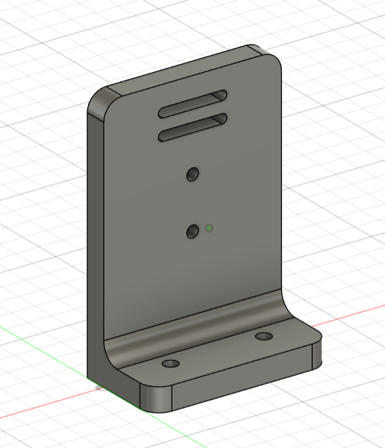
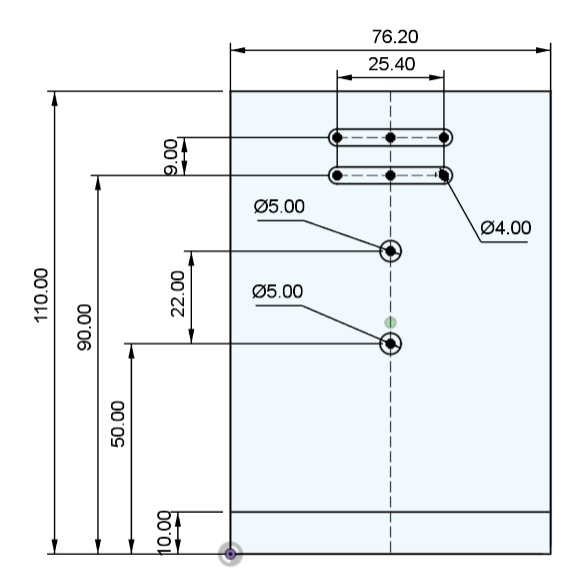
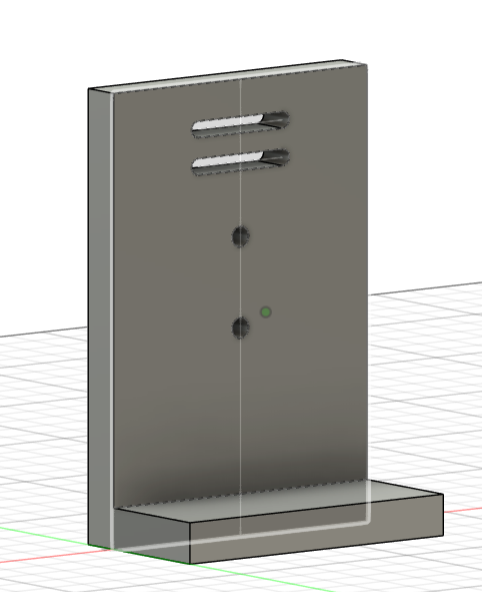
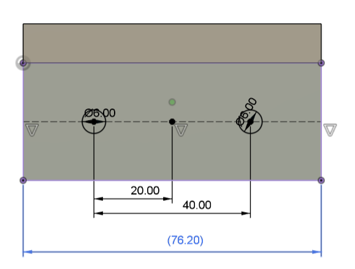
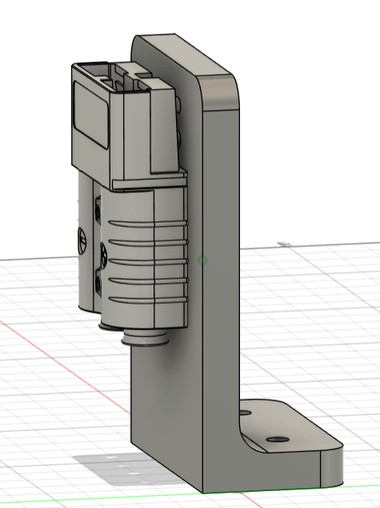

Applied Engineering & Robotics | Units 1-5
LastName_Midterm_CAD.f3d
Create a mounting bracket for a 12V Anderson Power Plug using Fusion 360. Follow all dimensions exactly as shown in the reference images, then mount the Anderson Plug component to complete the assembly.

Create a new sketch on the XY plane. Draw the bracket profile using the dimensions shown below. Include the two Ø5.00 mounting holes and the two slots for the Anderson Plug.

Extrude the main bracket body 10mm. Then extrude the bottom flange 30mm (total flange thickness).

Start a new sketch on the bottom of the flange. Add two Ø6.00 mounting holes at the positions shown (20mm and 40mm from the left edge).

Apply 8mm fillets to all outside corners of the bracket and the inside corner where the upright meets the flange.
Insert the Anderson Power Plug component from: Common Components / Midterm /
Common Components / Midterm /
Use joints to mount the plug to the bracket using the two slots and mounting holes.

// Robot Motion Control System int leftMotorPin = 9; int rightMotorPin = 10; int buttonPin = 7; int potPin = A0; int speed = 0; boolean isRunning = false; void setup() { pinMode(leftMotorPin, OUTPUT); pinMode(rightMotorPin, OUTPUT); pinMode(buttonPin, INPUT_PULLUP); Serial.begin(9600); } void loop() { if (digitalRead(buttonPin) == LOW) { isRunning = !isRunning; delay(300); } if (isRunning) { speed = analogRead(potPin); speed = map(speed, 0, 1023, 100, 255); analogWrite(leftMotorPin, speed); analogWrite(rightMotorPin, speed); Serial.print("Motors ON - Speed: "); Serial.println(speed); } else { analogWrite(leftMotorPin, 0); analogWrite(rightMotorPin, 0); Serial.println("Motors OFF"); } delay(100); }
(Multiple Choice + Code Analysis)
CAD score will be graded separately (30 points)